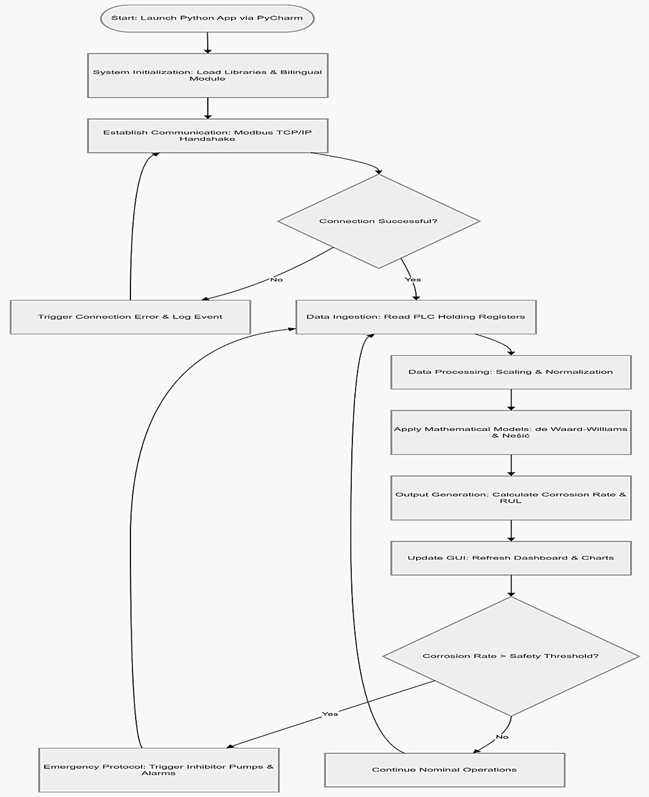
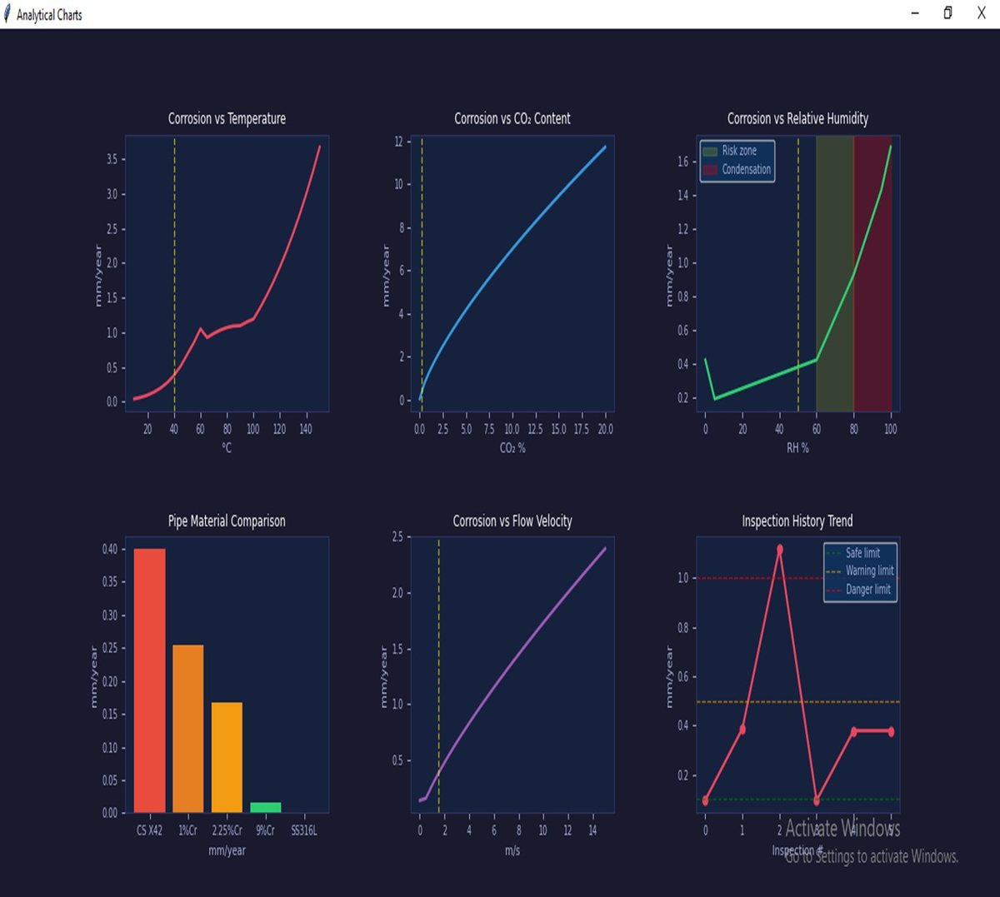
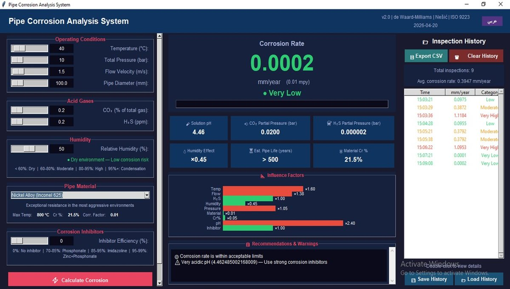

- 01
The problem
Pipelines fail from the inside.
Corrosion eats pipe walls where nobody can see it. Pitting is the worst form: small, deep pits that can end in a sudden leak.
Manual inspection is slow and costly, and long pipeline networks make it harder still. By the time damage is found, the repair is expensive and the environment may already be contaminated.
- 02
The idea
Measure. Predict. Warn.
The system is built in three layers. Sensors read the pipe's conditions, a PLC passes the readings on, and software turns them into a corrosion rate, a remaining-life estimate and a risk level.
Physical layerSmart corrosion coupons made from the pipe's own steel grades (API 5L X52 and X65), measured by electrical resistance (ER) and linear polarization resistance (LPR), plus temperature, pressure, flow, humidity and pH sensors.Control layerA PLC reads and conditions the signals and sends them to the computer over Modbus TCP/IP.Analysis layerPython software calculates the corrosion rate and remaining life, classifies the risk and shows trends on a dashboard.Grounded in the field. Before building it, the team visited the inspection department of Missan Oil Company on an official visit arranged by the college, to learn how pipe corrosion is measured today and what challenges engineers face on site. The software's input structure follows the monitoring workflow of PetroChina (Maysan Operations), the operator contracted with Missan Oil Company.
The sensor and PLC layers are the system design. The results on this page come from the software, tested with simulated inputs.
- 03
The method
From sensor values to a risk level.
The software starts from the de Waard–Milliams equation for CO₂ corrosion of carbon steel, then adjusts the result for temperature, flow, pH, humidity, pressure and the pipe material.
log10(V) = 5.8 − 1710 / T + 0.67 · log10(pCO2)V: corrosion rate (mm/year) · T: temperature (K) · pCO2: CO₂ partial pressure (bar)The final rate is placed in one of five risk bands. The dashboard changes colour and shows a recommendation as the rate rises.
Very lowup to 0.025Lowup to 0.125Moderateup to 0.5Highup to 1.0Very highabove 1.0
The program loop: connect to the PLC, read the registers, apply the models, update the dashboard and raise an alarm when the rate passes the safety threshold. - 04
The results
Nine scenarios. One dashboard.
The team ran the software through nine cases: carbon steel X52, carbon steel X65 and the nickel alloy Inconel 625, each at 20, 40 and 90 °C, with 0.2 % CO₂.
These are simulation results from the team's own software. They have not yet been compared with laboratory or field corrosion measurements.

The analysis window for X65 steel at 40 °C: corrosion against temperature, CO₂ content, humidity, pipe material and flow velocity, plus the inspection history. Heat is the main driver
Corrosion rate of X52 carbon steel in the simulation, 0.2 % CO₂.
0.5 mm/year: upper limit of “Moderate”
00.40.81.20.09750.38721.118420 °C40 °C90 °CCase Material Temp. Rate (mm/year) Est. life (years) Risk 1 Carbon steel X52 20 °C 0.0975 51.3 Low 2 Carbon steel X52 40 °C 0.3872 12.9 Moderate 3 Carbon steel X52 90 °C 1.1184 4.2 Very high 4 Carbon steel X65 20 °C 0.0955 52.4 Low 5 Carbon steel X65 40 °C 0.3792 13.2 Moderate 6 Carbon steel X65 90 °C 1.0953 4.6 Very high 7 Inconel 625 20 °C 0.0001 > 500 Very low 8 Inconel 625 40 °C 0.0002 > 500 Very low 9 Inconel 625 90 °C 0.0006 > 500 Very low 
The same dashboard for Inconel 625 at 40 °C: 0.0002 mm/year, “Very low”. Temperature beats steel gradeMoving from X52 to X65 at 40 °C changed the rate by about 2 % (0.3872 to 0.3792 mm/year). Going from 20 to 90 °C changed it about eleven-fold.Advice, not just numbersA rule-based expert engine reads the risk band, the pH and the inhibitor setting, then writes plain advice. At 0.3792 mm/year it says “Monthly periodic monitoring” and “Use strong corrosion inhibitors” for the acidic pH.Alloys are a model inputInconel 625 comes out near zero because the model gives it a material factor of 0.01 (X65: 0.95). Real behaviour needs laboratory validation. - 05
From project to product
Where this could work.
- Oil and gas pipelines and flowlines
- Water-supply and chemical-plant piping
- Maintenance planning from corrosion trends instead of fixed schedules
Where the project stands, and what comes next:
DoneSoftware prototypeCorrosion model, dashboard, charts, history log and a nine-case simulation study.NextTest benchCorrosion coupons, sensors and a PLC wired to the software and checked against laboratory measurements.LaterField pilotA trial on a real pipeline with long-term data, to check and tune the model.